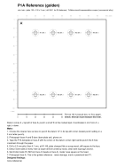
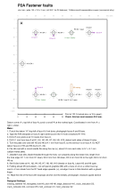
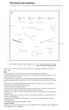
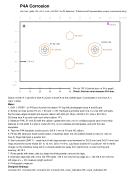
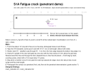
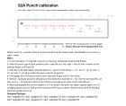
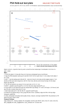

Ayas coupon templates
Print each SVG on its own at 100 % / actual size (no 'fit to page'), then check the 50 mm bar with a caliper before punching. Generated from configs/coupons.yaml by python -m ayas.twin.coupons templates; see docs/twin/coupon_fabrication.md.
| Face | Name | Role | Plate (mm) | Holes | Defects | Template |
|---|
| P1A | Reference (golden) | train | 100 x 100 x 3 | 8 | 0 | P1A.svg |
| P2A | Fastener faults | train | 100 x 100 x 3 | 10 | 5 | P2A.svg |
| P3A | Dents and scratches | train | 100 x 100 x 3 | 4 | 15 | P3A.svg |
| P4A | Corrosion | train | 100 x 60 x 3 | 2 | 6 | P4A.svg |
| S1A | Fatigue crack (penetrant demo) | calib | 100 x 20 x 3 | 1 | 2 | S1A.svg |
| S2A | Punch calibration | calib | 100 x 20 x 3 | 0 | 9 | S2A.svg |
| P5A | Held-out test plate | test | 100 x 100 x 3 | 7 | 9 | P5A.svg |
P1A Reference (golden) (train)
Open P1A.svg to print

Make
- Choose the cleaner face as face A; punch the datum "A" in its top-left corner (lowest punch setting or a 3 mm letter punch).
- Photograph faces A and B bare (bare-plate set), gloves on.
- Tape the P1A template on face A with its corner on the datum corner; light centre-punch the 8 hole crosshairs through the paper.
- Drill a 2.5 mm pilot, then 4.1 mm, at H1-H8, plate clamped flat on scrap wood, drill square to the face.
- Deburr both sides of every hole (a larger drill bit turned by hand); clean with isopropyl alcohol.
- Set 8 blind rivets R1-R8 from face A (heads on face A), riveter nose square on the head.
- Photograph face A. This is the golden reference - never damage, mark or penetrant-test P1.
Designed findings
P2A Fastener faults (train)
Open P2A.svg to print

Make
- Punch the datum "A" (top-left of face A) if not done; photograph faces A and B bare.
- Tape the P2A template on face A; light centre-punch the 10 hole crosshairs H1-H10.
- Drill 2.5 mm pilots at all 10 marks from face A.
- Drill 4.1 mm from face A at H1, H2, H4, H5, H7, H8, H9, H10; deburr both sides of these 8 holes.
- Turn the plate over and drill H3 and H6 at 4.1 mm from face B, so the exit burr is on face A. Do NOT deburr face A of H3 and H6 (burrs X1, X2).
- File H6 oval with a round needle file along the row (u), about 0.5 mm each side, to 5.1 x 4.1 mm (caliper inside jaws).
- Jeweller's saw slits, blade threaded through the hole, cut outwards along the drawn line, length from the hole edge: D1 1 mm from H1 down, D2 2 mm from H2 down, D3 4 mm from H4 to the right, D4 6 mm from H5 up.
- Set 8 blind rivets at H1, H2, H4, H5, H7, H8, H9, H10 (heads on face A). Leave H3 and H6 open.
- Fretting streak D5 (simulated) - rub soft pencil graphite (6B) with a trace of oil on a cotton bud, lay one 8 x 2 mm streak from the R7 head edge upwards (-v), smudge it once in that direction with a gloved finger.
- Wipe the rest of the face with isopropyl alcohol (not the streak); photograph; measure (guide section 8).
Designed findings
- missing_fastener H3
- elongated_hole H6
- pitch H8-H9
- edge_distance H10
- crack_indication D3
- crack_indication D4
- corrosion D5
- hold_unknown X1
- hold_unknown X2
P3A Dents and scratches (train)
Open P3A.svg to print

Make
- Punch the datum "A" (top-left of face A) if not done; photograph faces A and B bare.
- Tape the P3A template on face A; centre-punch the 4 hole crosshairs; drill 2.5 mm pilots then 4.1 mm; deburr both sides. Do not rivet yet.
- Put the plate flat on a steel block. Punch dents through the template at the marked settings (same session and settings as S2A) - near D1 low x1, D2 mid x2, D3 high x3; far D4 low x3, D5 mid x1, D6 high x2.
- Ball dents on the steel block (practise first on face B of P4) - steel ball on the mark, hammer blow - D7 light (aim 5.5 mm across), D8 firm (aim 7.5 mm).
- Set 4 blind rivets R1-R4 (heads on face A).
- Scratches along a steel rule between the marked start and end points - D9 scriber 1 light pass, D10 3 passes, D11 5 firm passes; gouge D12 with the corner of a flat file, 3 passes.
- Abrasion D13 - mask a 10 x 10 mm window with tape, 220 grit on a small flat block, 30 strokes along u; remove the tape.
- Blend X1 (rework mark, not a defect) - 220 grit over the steel ball, rotate to a 10 mm dish about 0.25 mm deep, finish with 400 grit.
- Edge nicks D14 (left edge) and D15 (right edge) - 3-5 strokes of a triangular needle file across the face-A edge corner.
- Clean with isopropyl alcohol; photograph; measure.
Designed findings
- dent_minor D1
- dent_minor D2
- dent_minor D3
- dent_negligible D4
- dent_negligible D5
- dent_negligible D6
- dent_negligible D7
- dent_negligible D8
P4A Corrosion (train)
Open P4A.svg to print

Make
- DAY 1, FIRST - on P4 face A punch the datum "A" top-left; photograph faces A and B bare.
- Scribe cut lines across P4 at v = 60 and v = 80. Hacksaw just below each line in a vise with soft jaws; file the sawn edges straight and square; deburr with 400 grit. Strip v 60-80 is S1, strip v 80-100 is S2 (keep face A up and mark each strip's datum "A").
- Measure P4A, S1 and S2 with the caliper; update their size_mm in configs/coupons.yaml (move strip features to mid-width if a strip is under 20 mm), re-run validate and templates, and print the new templates.
- Tape the P4A template; centre-punch, drill 4.1 mm at H1 and H2; deburr.
- Fit two M4 steel pan-head screws (plain or stainless steel, not zinc-plated) heads on face A, nuts on face B, finger-tight plus a quarter turn.
- Start corrosion (DAY 1) - mask face A with tape except round windows for D3 (8 mm) and D4 (10 mm) and rings around the screw heads (D1 to 12 mm, D2 to 14 mm). Lay tissue soaked in 5 g salt per 100 ml white vinegar on the windows; keep wet in a closed plastic box away from electronics; re-wet morning and evening; 48-72 h.
- Rinse gently with water, dab dry, keep the white powder; remove the tape.
- Hacksaw edge slits with a fine (32 TPI) blade - D5 3 mm into the top edge at u = 88, D6 6 mm into the left edge at v = 40; measure length and kerf.
- Photograph; measure.
Designed findings
- corrosion D1
- corrosion D2
- corrosion D3
- corrosion D4
- crack_indication D5
- crack_indication D6
S1A Fatigue crack (penetrant demo) (calib)
Open S1A.svg to print

Make
- Punch the datum "A" (top-left of face A) on the strip; photograph faces A and B bare.
- Tape the S1A template; centre-punch and drill H1 4.1 mm at mid-length; deburr both sides.
- Starter notch D1 - jeweller's saw through H1, 1 mm from the hole edge towards the bottom long edge (+v).
- Clamp S1 upright in the vise (soft jaws) by one end, with the hole centre 2-3 mm above the jaw tops. Reverse-bend the free end through the face (towards face A, then face B) about +-15-20 deg by hand, counting cycles; check with a 10x loupe every 10 cycles.
- Stop when a hairline runs 2-5 mm past the notch tip towards the edge; return the strip to flat; record cycles and the crack length.
- Photograph the surface (no penetrant) first; only then do the penetrant demonstration (guide section 7).
Designed findings
- crack_indication D1
- crack_indication D2
S2A Punch calibration (calib)
Open S2A.svg to print

Make
- Punch the datum "A" (top-left of face A) on the strip; photograph faces A and B bare.
- Mark the punch cap at three positions (low = cap fully out, mid, high = fully in) with a marker so the settings repeat on P3 and P5.
- Strip flat on the steel block, template taped on - punch D1-D9 along v = 10 - low x1, x2, x3, mid x1, x2, x3, high x1, x2, x3 (re-strike the same mark for x2 and x3).
- Photograph face A; measure each mark's diameter (loupe and 0.5 mm scale).
- Section - hacksaw along the strip about 2 mm below the mark line (v = 12), then file and sand the cut face up to v = 10 until each notch in the cut face is as wide as its mark. Finish with 400 grit.
- Macro-photograph the cut face beside a 0.5 mm scale; read each true depth; update depth_mm in configs/coupons.yaml for S2A and the matching P3/P5 punch dents. Use the offcut sliver for the alloy bend test (guide section 3).
Designed findings
- dent_negligible D1
- dent_negligible D2
- dent_negligible D3
- dent_negligible D4
- dent_negligible D5
- dent_negligible D6
- dent_negligible D7
- dent_negligible D8
- dent_negligible D9
P5A Held-out test plate (test)
Open P5A.svg to print

Make
- Punch the datum "A" (top-left of face A) if not done; photograph faces A and B bare.
- Tape the P5A template; centre-punch and drill H1-H7 (2.5 mm pilot, then 4.1 mm); deburr both sides of all 7 holes.
- DAY 1 - start the pitting patch D8 with P4 - mask all of face A, the holes and the edges except a 7 mm window at D8; same salt+vinegar box, 48-72 h; then rinse, dab dry and remove the tape. Do the steps below only after this.
- File H5 oval along the row, about 0.4 mm each side, to 4.9 x 4.1 mm.
- Slit D7 - jeweller's saw through H4, 4 mm from the hole edge towards H5 (+u).
- Punch dents on the steel block with the marked S2A cap settings - D1 mid x3, D2 high x1, D3 low x2; ball dent D4 with a medium blow (aim 6.5 mm).
- Set 5 blind rivets at H1, H2, H4, H6, H7. Leave H3 and H5 open.
- Scriber D5 (3 passes along a rule); gouge D6 (file corner, 3 passes); edge nick D9 on the top edge (triangular needle file).
- Clean, photograph (including video-quality shots), measure, and bag it labelled TEST. No penetrant on P5 before the demo video is shot.
Designed findings
- edge_distance H1
- missing_fastener H3
- elongated_hole H5
- pitch H6-H7
- dent_minor D1
- dent_minor D2
- dent_negligible D3
- dent_negligible D4
- crack_indication D7
- corrosion D8